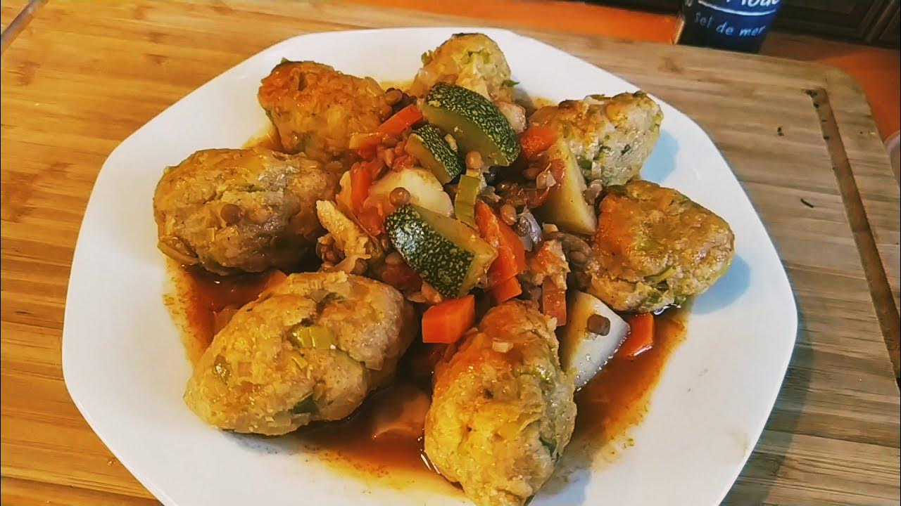

Khobz El Tounes

Description
This refined pastry also called Khobz el bey comes from the Algerian Arabic meaning
"bread of the bey" because as said before, its creation dates back to the Ottoman period
of the city of Algiers, from where the name of this snack very appreciated by the beys of Algiers.
As for its main name "Khobz el Tounes", it is said that the "Tounes" is the name of its creator, an Algerois woman.
It is a perfectly anti-waste sweetness, because we are going to recycle stale bread,
which we are going to reduce to breadcrumbs, mix with pruned and coarsely
crushed dried fruit, a little melted butter and a few eggs, and here we are
with a nice delicacy with the scent of orange blossom which is even more accentuated,
once taken out of the oven and drizzled with a syrup well scented with orange blossom.
Adapted from Amour De Cuisine's recipe
Ingredients
For the bread
(250 ml cup for a 30 cm diameter mould)
- 1 cup peeled and coarsely chopped almonds.
- 1 cup of eggs (4 to 5 eggs)
- 3/4 cup of sugar
- 1/2 cup of butter or good quality oil
- 1 cup of breadcrumbs
- 1 packet of baking powder
- Lemon zest and vanilla
- 3 tbsp of orange blossom water
For the syrup
- 2 cups of water
- 1 cup of sugar
- 1 slice of lemon
- 2 tbsp of orange blossom water
Steps
- Start by preparing the syrup, boil the sugar with the water for almost 10 minutes, at the end of cooking, add the orange blossom water and remove from the heat.
- To prepare the cake, mix all the ingredients for the dough.
- Pour the dough into a mold approx. 30 cm in diameter, or into individual molds.
- bake in a preheated oven at 180˚C, until the cake takes on a nice color and the tip of a knife inserted in it comes out very dry.
- When the cake comes out of the oven, cut squares or diamonds and drizzle with syrup still in the mold, let all the syrup absorb well before presenting in boxes if you wish.
- Decorate according to your means and your taste.